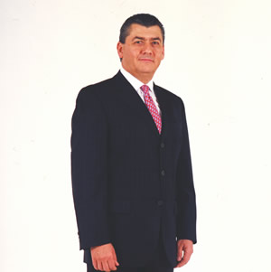

Inicio » Somos SCYF » Historia
Somos SCYF
Socio:
Personal que labora en las Empresas Patrocinadoras. Es responsable y a la vez beneficiario del impulso a su propia calidad de vida y la de su familia".
Personal que labora en las Empresas Patrocinadoras. Es responsable y a la vez beneficiario del impulso a su propia calidad de vida y la de su familia".
Impulsores
SCYF
José Antonio Fernández Carbajal
Asumió el cargo de Director General de FEMSA en enero de 1995, y como Presidente del Consejo de Administración en marzo de 2001. En mayo de 2010 fue nombrado Vicepresidente del Consejo de Administración de Heineken NV's y Presidente del Comité de las Américas de Heineken. En febrero de 2012 fue nombrado Presidente del Consejo de Administración del Instituto Tecnológico y de Estudios Superiores de Monterrey, ITESM.
Ha sido un gran impulsor de la filosofía SCYF, gracias a lo cual nuestra Institución incrementó considerablemente su número de filiales en la República Mexicana.
Ha contribuido a clarificar que lo esencial en SCYF es el concepto filosófico, el conjunto de valores y principios que forman la Institución.
Fuente: Página Web FEMSA
